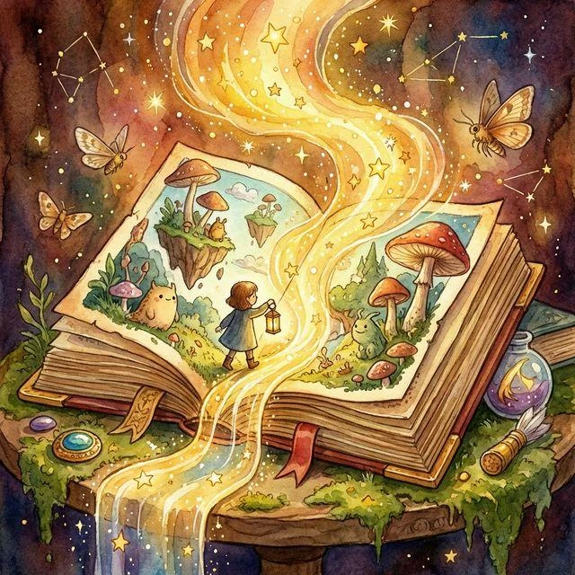
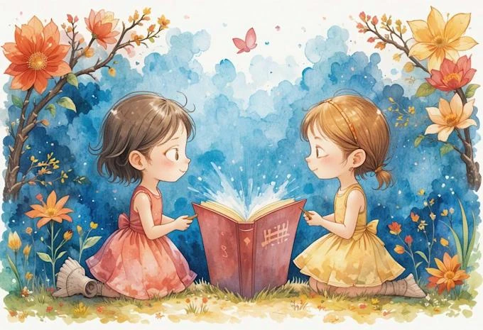
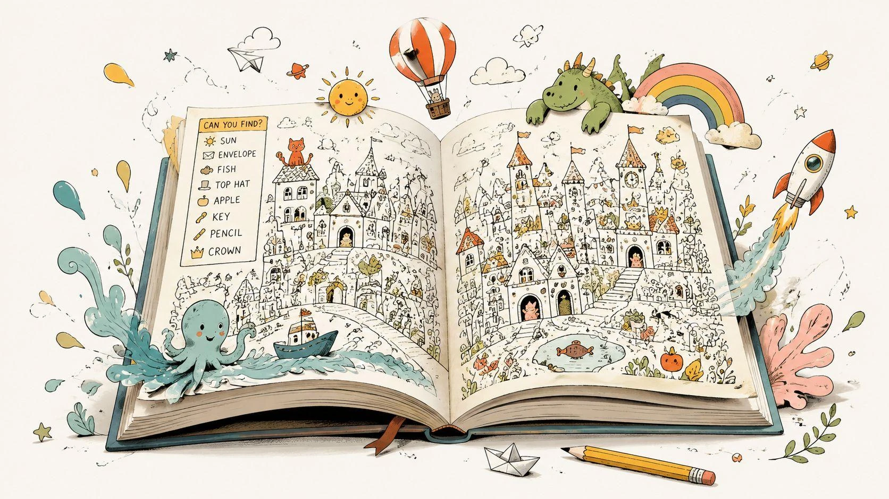
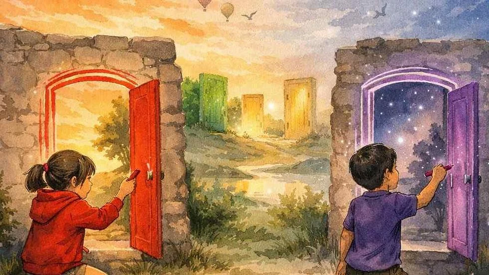

Un libro nunca es exactamente el mismo cuando volvemos a leerlo

¿Te ha sucedido que una historia que conocías de memoria te sorprende cuando la lees otra vez?
Quizá descubriste una pista que antes no habías visto, comprendiste mejor a un personaje o encontraste un significado diferente en una escena.
El libro no necesariamente cambió. Lo que cambió fue tu mirada.
Cada vez que leemos, llevamos con nosotros nuestros recuerdos, experiencias, conocimientos, emociones y preguntas. Por eso, una misma historia puede acompañarnos de distintas maneras a lo largo del tiempo.
1. El lector también participa en la historia
Cuando un escritor crea un cuento, imagina personajes, lugares y acontecimientos. Pero la historia necesita encontrarse con alguien que la lea.
Mientras avanzamos por sus páginas, imaginamos voces, construimos paisajes, anticipamos sucesos e interpretamos lo que hacen sus protagonistas.
No somos espectadores completamente pasivos.
El escritor propone un universo y el lector participa en su descubrimiento.
Esto no significa que podamos atribuirle cualquier significado a una historia. Interpretar también implica prestar atención a lo que el texto muestra y distinguir lo que sabemos de lo que imaginamos.

2. Dos lectores, dos experiencias diferentes
Imaginemos a dos niños leyendo un cuento sobre un personaje que debe abandonar su hogar para iniciar una aventura.
Uno podría sentirse entusiasmado por los lugares que va a descubrir. Otro quizá se preocupe por la familia que deja atrás.
Ambos pueden haber comprendido la historia, aunque sus reacciones sean diferentes.
Cada lector aporta su experiencia y sus intereses. Por eso, conversar sobre un libro puede resultar tan interesante: nos permite descubrir aspectos que otra persona observó y nosotros no.
3. Las historias también crecen con nosotros
Un libro que leemos durante la infancia puede adquirir otro significado años después.
Cuando somos pequeños, quizá prestamos atención a las aventuras y los personajes divertidos. Con el tiempo podemos comenzar a comprender mejor sus decisiones, preocupaciones o conflictos.
Esto no ocurre siempre ni con todos los libros.
Pero regresar a una historia puede convertirse en una oportunidad para observar cuánto han cambiado nuestras preguntas.

4. Los detalles que descubrimos al volver
En la primera lectura de un misterio, queremos saber quién es el responsable.
En la segunda, tal vez reconocemos las pistas que el escritor había colocado desde el principio.
En un cuento ilustrado podemos descubrir gestos, objetos o pequeños acontecimientos que no habíamos advertido.
La relectura puede permitirnos profundizar en la comprensión, aunque nunca debe convertirse en una obligación.
Si un niño pide escuchar la misma historia varias veces, quizá está disfrutando de su familiaridad, sus personajes o la oportunidad de anticipar lo que sucederá.
5. La imaginación nos permite explorar otras posibilidades
Una historia puede terminar en la última página, pero nuestra imaginación no necesariamente termina allí.
Podemos preguntarnos qué habría sucedido si un personaje hubiera elegido otro camino, inventar una conversación que no aparece en el libro o imaginar una nueva aventura.
Así, la lectura puede convertirse en un punto de partida para la creación.
Es importante distinguir entre respetar la obra original y proponer una creación propia inspirada en ella.
Cada posibilidad tiene su espacio.

6. Lo que una historia nos ayuda a descubrir de nosotros mismos
A veces nos sorprende la valentía de un personaje. Otras veces nos incomoda su comportamiento.
Esas reacciones pueden invitarnos a preguntarnos qué valoramos, qué nos preocupa o cómo interpretamos determinadas situaciones.
No necesitamos encontrar una moraleja en cada cuento. Hay historias que simplemente disfrutamos por su belleza, su humor o su misterio.
El lector tiene derecho a disfrutar, cuestionar y también disentir.
7. Las tres vidas de un libro
En JUFANTICS podemos imaginar tres maneras de encontrarnos con una misma historia.
Primera vida: descubrir. Conocemos la aventura, imaginamos sus escenarios y deseamos saber qué sucederá.
Segunda vida: mirar nuevamente. Si queremos regresar, observamos detalles, conexiones y significados que antes no advertimos.
Tercera vida: crear. Podemos transformar lo que nos inspiró en un dibujo, una conversación, un final alternativo o una historia completamente nueva.
Estas tres posibilidades no son etapas obligatorias. Son invitaciones que cada lector puede aceptar a su manera.
Una invitación para toda la familia
Busca algún cuento que hayas disfrutado hace tiempo.
Puedes volver a leerlo o recordar una de sus escenas. Luego piensa:
- ¿Qué me gustaba más de esta historia?
- ¿Qué detalle descubro ahora?
- ¿Ha cambiado mi opinión sobre algún personaje?
- ¿Qué parte de la historia todavía me sorprende?
Tal vez encuentres algo nuevo. Tal vez descubras que sigue gustándote por las mismas razones.
Ambas experiencias son valiosas.
En JUFANTICS creemos que los buenos encuentros con los libros no tienen una única forma ni un único momento.
Porque las historias pueden conservar sus palabras, mientras nosotros seguimos cambiando y descubriendo nuevas maneras de comprenderlas.
JUFANTICS — La imaginación cobra vida.